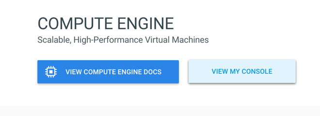
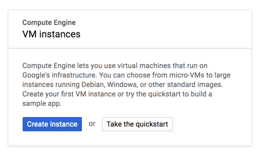
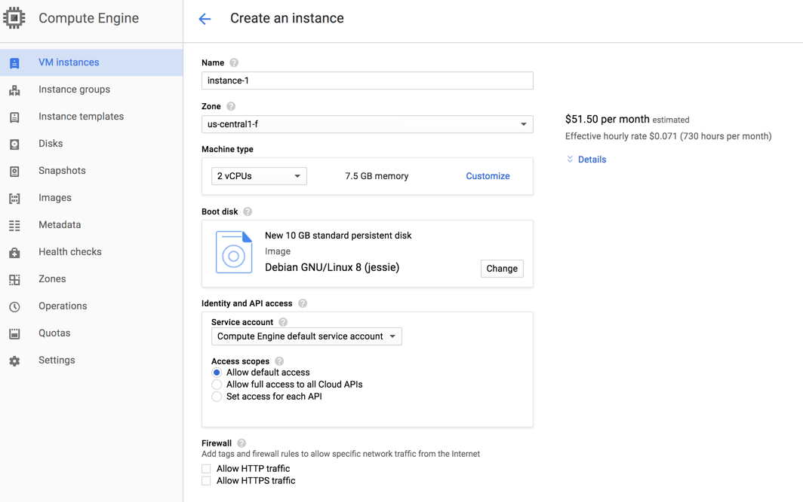
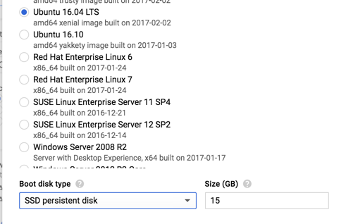
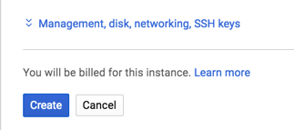
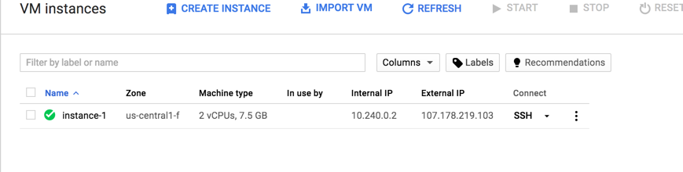
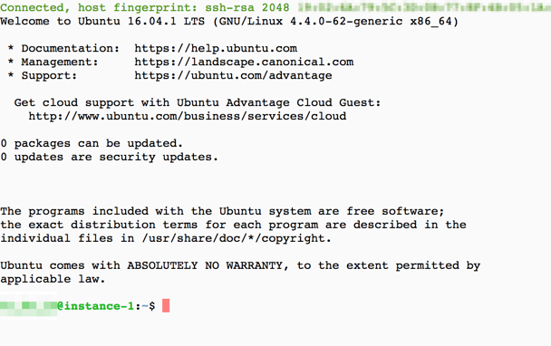
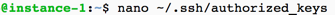
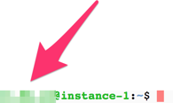
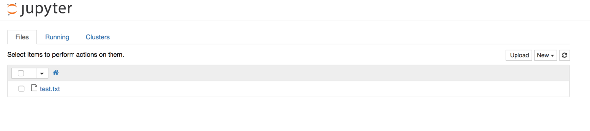

Background
Jupiter notebooks (iPython notebooks) is a convenient and powerful tools for research. Setting up an entire workstation with all the right packages, and extras such as Spark, can be a steep hill to climb. This entry shows you how to use docker-sparker to quickly get a workstation up and running so that you can focus on the more interesting task of research. This workstation will come packed With many great Python tools and a Cloud 9 IDE interface.
Getting up and running
Quick overview
First you will need to install Docker on your workstation. That is pretty easy to do. You will also need to install docker-compose. I would highly recommend you install docker-compose from the official installation instructions here.
If this is good enough to get you started, then you can skip the next section.
Working remote-install example: Google Compute Engine
In this example we will demonstrate how to install Docker on a Google cloud VM. We will take it step by step. We will create a Linux VM in Google's Compute Engine cloud, run the docker-sparker container on it, and use ssh tunnel to securely connect to our notebook. The result will be that can do powerful computations on light laptops, e.g. the Macbook 12" by treating your workstation as a front end interface for your more powerful backend server which is hosted in the cloud.
Starting your VM
Warning! If you follow these steps, you will get a charge from Google, launching a virtual machine in Google's cloud is a paid service. You can use docker-sparker without paying, of course, if your laptop is powerful enough (you have 2gb of RAM free).
- Navigate to the Google Compute Engine Console. You'll want to be logged into your Google Account. The VM you launch will be tied to your Google Account such that you can ssh into it from your webrowser by being logged into your account.
- Click on "View My Console" (you may have to go through some sign up processes first).

- Select "Create Instance":

- In the next menu, you can customize what size of VM you'd like:

The great thing here is that Google will give you a price estimate so you can select various configurations of vCPU/RAM. For this project, two CPUs should be enough for many purposes. It is vCPU that drives the cost, and you can customize and increase the RAM size without greatly increasing the cost. * The default disk size of 10GB and standard disk is not recommended, I'd suggest upgrading to 15GB SSD if you anticipate having larger data sets. Click on the "change" button in the Boot disk section and select Ubuntu 16.04 and change the disk type to SSD and the size to what you feel will work best for you:

- Finally, hit create to create your new VM. The meter starts running and your billing will begin.

- You will be taken to a VM dashboard:

Click on SSH and a window will pop up with a built-in ssh terminal:

- Now we can install Docker! First, let's update our system:
sudo apt-get update
sudo apt-get upgrade
- Next follow the official Docker advised steps to install Docker in Ubuntu 16.04: here
- And then for Docker compose: here
We are ready to join the main instructions for installing docker-sparker, but first a note about connecting to your Cloud 9 IDE and Jupyter notebook from your cloud VM. You can do this in two ways. You can manipulate the firewall for your VM and allow ports 9999 and 18888 to be open to your IP address. If you share your IP address with others, I do not suggest you go that route. The alternative is to SSH tunnel into your instance to allow a secure connection. If you are on a Linux or Mac workstation, you are in great luck and ssh is easy to get access to. If you are using Windows, you'll need to install an SSH client of your choice or if you have Windows 10 Pro, Linux Userspace for Windows is an option for ssh out of the box.
Opening a terminal, you would create a key pair, if you don't already have one:
ssh-keygen -t rsa
and follow those prompts. You will then want to copy the
contents of your public key (you can easily see that from
the comand line by running cat ~/.ssh/id_rsa.pub) and
place that inside a file on the VM server located at
~/.ssh/authorized_keys:

nano ~/.ssh/authorized_keys and scroll down to the
bottom to make a new line and paste your id_rsa.pub
contents and then Cntrl-x to save. One last thing
before we are ready to go: get the ip address of your
VM. This is not going to be guaranteed to be static
unless you pay a little extra for a static IP, but you'll
find that it doesn't change very much. From the VM ssh
window run curl ifconfig.io and that is your new IP.
Let's say your IP is 8.8.8.8 (it own't be but just for
the sake of the walkthrough we will pretend it is).
Then, from you workstation, launch a tunnel into your VM
ssh -L 9999:localhost:9999 -L 18888:localhost:18888 username@8.8.8.8
where username is the username of your workstation that
can be found on the left of the @ symbol in your ssh
window command prompt line (the part blurred below):

What this does is tunnel the ports that docker-sparker will be using to serve Cloud 9 IDE (9999) and Jupyter notebook (18888) through your SSH connection such that you can access the ports at localhost rather than remotely. That is, instead of pointing your browser at:
you will point to
which will point to the port tunneled locally.
Getting docker-sparker up and running
- Install git on the machine you want to be running docker-sparker on. On a linux machine:
sudo apt-get install git
- Clone the docker-sparker repo:
git clone https://github.com/doctimjones/docker-sparker.git
- Move into the workstation directory:
cd docker-sparker/workstation-container
- Modify the
docker-compose.yamlfile as you'd like, in particular, you'll want to point it to a workspace. If you use the default, create ascratchfolder (mdkir ~/scratch):
version: '2'
services:
workstation:
build:
context: ../workstation-container/
ports:
- "127.0.0.1:9999:9999"
- "127.0.0.1:18888:8888"
depends_on:
- spark-base
image: workstation-container
volumes:
- $HOME/scratch:/usr/local/develop
- $HOME/.ssh:/root/.ssh
- $HOME/.aws:/root/.aws
- $HOME/.config:/root/.config
- $HOME/.gitconfig:/root/.gitconfig
spark-base:
build:
context: ../base-container/
If you are using an ssh tunnel to connect or running it on your local workstation, the ports configuration in the above yaml works fine; if you are going to be connecting remotely and opening firewall ports, then remove the "127.0.0.1:" prefix on the ports entries.
Docker and UFW warning: If you are using UFW to set your firewall on your machine on Ubuntu 16.04, Docker will override UFW and leave ports 9999 and 18888 open to the world even if you block them with UFW. You can fix this behavior by creating the file
/etc/docker/daemon.jsonwith contents{ "iptables": false }and restarting Docker and UFW.
- Run
docker-compose up -d. This will take quite a bit of time to build, possibly up to an hour or more depending on your system capacity.
Once it has successfully built the containers and started them, you can now access your Cloud 9 IDE at:
and your Jupyter notebook at
If you are using a remote host, simply replace localhost in
the links above with that hosts FQDN or IP Address.
You should see a Cloud 9 IDE at http://localhost:9999:

and a Jupyter notebook at http://localhost:18888:

Now do some great development and research!